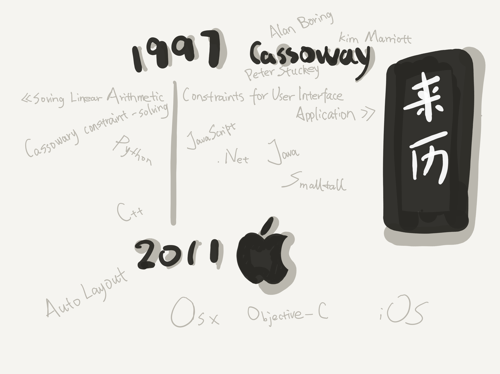
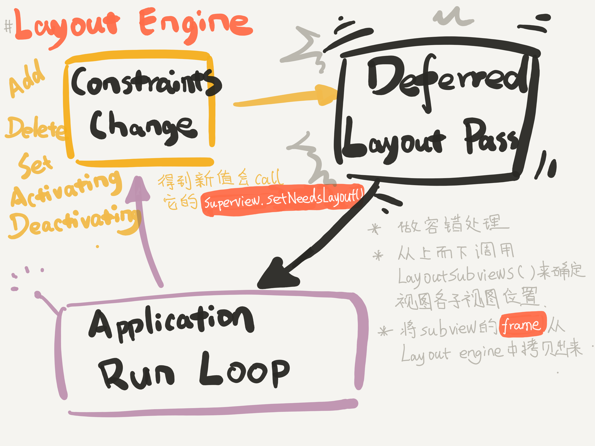
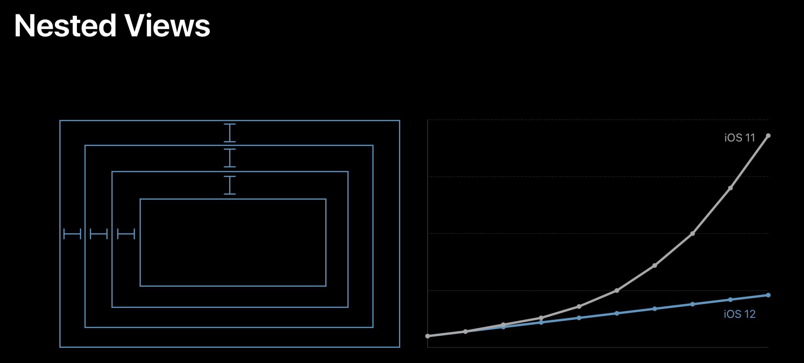
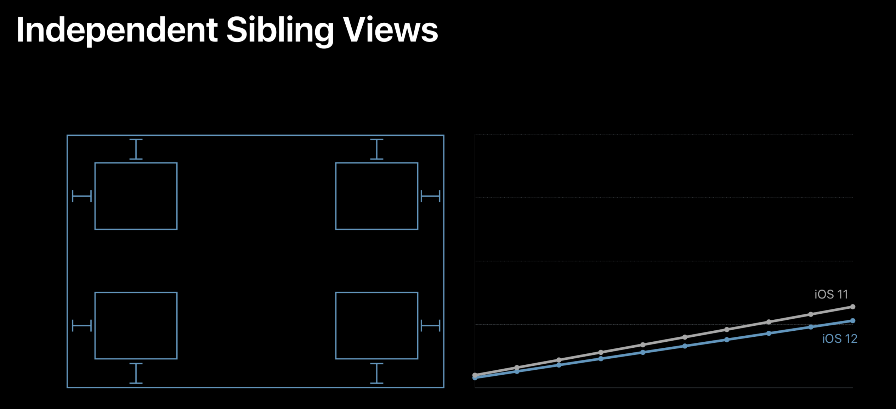
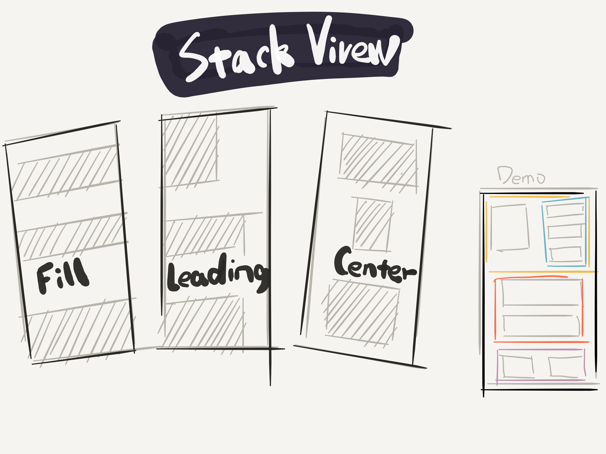

- 00 开篇词 锚定一个点，然后在这个点上深耕.md.html
- 01 建立你自己的iOS开发知识体系.md.html
- 02 App 启动速度怎么做优化与监控？.md.html
- 03 Auto Layout 是怎么进行自动布局的，性能如何？.md.html
- 04 项目大了人员多了，架构怎么设计更合理？.md.html
- 05 链接器：符号是怎么绑定到地址上的？.md.html
- 06 App 如何通过注入动态库的方式实现极速编译调试？.md.html
- 07 Clang、Infer 和 OCLint ，我们应该使用谁来做静态分析？.md.html
- 08 如何利用 Clang 为 App 提质？.md.html
- 09 无侵入的埋点方案如何实现？.md.html
- 10 包大小：如何从资源和代码层面实现全方位瘦身？.md.html
- 11 热点问题答疑（一）：基础模块问题答疑.md.html
- 12 iOS 崩溃千奇百怪，如何全面监控？.md.html
- 13 如何利用 RunLoop 原理去监控卡顿？.md.html
- 14 临近 OOM，如何获取详细内存分配信息，分析内存问题？.md.html
- 15 日志监控：怎样获取 App 中的全量日志？.md.html
- 16 性能监控：衡量 App 质量的那把尺.md.html
- 17 远超你想象的多线程的那些坑.md.html
- 18 怎么减少 App 电量消耗？.md.html
- 19 热点问题答疑（二）：基础模块问题答疑.md.html
- 20 iOS开发的最佳学习路径是什么？.md.html
- 21 除了 Cocoa，iOS还可以用哪些 GUI 框架开发？.md.html
- 22 细说 iOS 响应式框架变迁，哪些思想可以为我所用？.md.html
- 23 如何构造酷炫的物理效果和过场动画效果？.md.html
- 24 A_B 测试：验证决策效果的利器.md.html
- 25 怎样构建底层的发布和订阅事件总线？.md.html
- 26 如何提高 JSON 解析的性能？.md.html
- 27 如何用 Flexbox 思路开发？跟自动布局比，Flexbox 好在哪？.md.html
- 28 怎么应对各种富文本表现需求？.md.html
- 29 如何在 iOS 中进行面向测试驱动开发和面向行为驱动开发？.md.html
- 30 如何制定一套适合自己团队的 iOS 编码规范？.md.html
- 31 iOS 开发学习资料和书单推荐.md.html
- 32 热点问题答疑（三）.md.html
- 33 iOS 系统内核 XNU：App 如何加载？.md.html
- 34 iOS 黑魔法 Runtime Method Swizzling 背后的原理.md.html
- 35 libffi：动态调用和定义 C 函数.md.html
- 36 iOS 是怎么管理内存的？.md.html
- 37 如何编写 Clang 插件？.md.html
- 38 热点问题答疑（四）.md.html
- 39 打通前端与原生的桥梁：JavaScriptCore 能干哪些事情？.md.html
- 40 React Native、Flutter 等，这些跨端方案怎么选？.md.html
- 41 原生布局转到前端布局，开发思路有哪些转变？.md.html
- 42 iOS原生、大前端和Flutter分别是怎么渲染的？.md.html
- 43 剖析使 App 具有动态化和热更新能力的方案.md.html
- 用户故事 我是如何学习这个专栏的？.md.html
- 结束语 慢几步，深几度.md.html
- 捐赠
03 Auto Layout 是怎么进行自动布局的，性能如何？
你好，我是戴铭。今天我来跟你聊下 Auto Layout 。
Auto Layout ，是苹果公司提供的一个基于约束布局，动态计算视图大小和位置的库，并且已经集成到了 Xcode 开发环境里。
在引入 Auto Layout 这种自动布局方式之前，iOS 开发都是采用手动布局的方式。而手动布局的方式，原始落后、界面开发维护效率低，对从事过前端开发的人来说更是难以适应。所以，苹果需要提供更好的界面引擎来提升开发者的体验，Auto Layout 随之出现。
苹果公司早在 iOS 6 系统时就引入了 Auto Layout，但是直到现在还有很多开发者迟迟不愿使用 它，其原因就在于对其性能的担忧。即使后来，苹果公司推出了在 Auto Layout 基础上模仿前端 Flexbox 布局思路的 UIStackView工具，提高了开发体验和效率，也无法解除开发者们对其性能的顾虑。
那么，Auto Layout 到底是如何实现自动布局的，这种布局算法真的会影响性能吗？
另外，苹果公司在 WWDC 2018 的“ WWDC 220 Session High Performance Auto Layout”Session中介绍说： iOS 12 将大幅提高 Auto Layout 性能，使滑动达到满帧，这又是如何做到的呢？你是应该选择继续手动布局还是选择Auto Layout呢？
就着这三个问题，我们就来详细聊聊 Auto Layout 吧。
Auto Layout的来历

图1 Auto Layout 来历
上图记录了两个时间点：
- 一个是1997年，Auto Layout 用到的布局算法 Cassowary 被发明了出来；
- 另一个是2011年，苹果公司将 Cassowary 算法运用到了自家的布局引擎 Auto Layout 中。
Cassowary 能够有效解析线性等式系统和线性不等式系统，用来表示用户界面中那些相等关系和不等关系。基于此，Cassowary 开发了一种规则系统，通过约束来描述视图间的关系。约束就是规则，这个规则能够表示出一个视图相对于另一个视图的位置。
由于 Cassowary 算法让视图位置可以按照一种简单的布局思路来写，这些简单的相对位置描述可以在运行时动态地计算出视图具体的位置。视图位置的写法简化了，界面相关代码也就更易于维护。苹果公司也是看重了这一点，将其引入到了自己的系统中。
Cassowary 算法由 Alan Borning、Kim Marriott、Peter Stuckey 等人在“Solving Linear Arithmetic Constraints for User Interface Applications”论文中提出的，为了能方便开发者更好地理解 这个算法，并将其运用到更多的开发语言中，作者还将代码发布到了他们搭建的 Cassowary 网站上。
由于 Cassowary 算法本身的先进性，更多的开发者将 Cassowary 运用到了各个开发语言中，比如 JavaScript、.NET、Java、Smalltalk、C++都有对应的库。
Auto Layout 的生命周期
Auto Layout 不只有布局算法 Cassowary，还包含了布局在运行时的生命周期等一整套布局引擎系统，用来统一管理布局的创建、更新和销毁。了解 Auto Layout 的生命周期，是理解它的性能相关话题的基础。这样，在遇到问题，特别是性能问题时，我们才能从根儿上找到原因，从而避免或改进类似的问题。
这一整套布局引擎系统叫作 Layout Engine ，是 Auto Layout 的核心，主导着整个界面布局。
每个视图在得到自己的布局之前，Layout Engine 会将视图、约束、优先级、固定大小通过计算转换成最终的大小和位置。在 Layout Engine 里，每当约束发生变化，就会触发 Deffered Layout Pass，完成后进入监听约束变化的状态。当再次监听到约束变化，即进入下一轮循环中。整个过程如下图所示：

图2 Layout Engine界面布局过程
图中， Constraints Change 表示的就是约束变化，添加、删除视图时会触发约束变化。Activating 或 Deactivating，设置 Constant 或 Priority 时也会触发约束变化。Layout Engine 在碰到约束变化后会重新计算布局，获取到布局后调用 superview.setNeedLayout()，然后进入 Deferred Layout Pass。
Deferred Layout Pass的主要作用是做容错处理。如果有些视图在更新约束时没有确定或缺失布局声明的话，会先在这里做容错处理。
接下来，Layout Engine会从上到下调用 layoutSubviews() ，通过 Cassowary 算法计算各个子视图的位置，算出来后将子视图的 frame 从 Layout Engine 里拷贝出来。
在这之后的处理，就和手写布局的绘制、渲染过程一样了。所以，使用 Auto Layout 和手写布局的区别，就是多了布局上的这个计算过程。那么，多的这个 Cassowary 布局，就是在iOS 12 之前影响 Auto Layout 性能的原因吗？
接下来，我就跟你分析下 Auto Layout 的性能问题。
Auto Layout 性能问题
Auto Layout的性能是否有问题，我们先看看苹果公司自己是怎么说的吧。

图3 Auto Layout 在 iOS 12 中优化后的表现
上图是 WWDC 2018 中 202 Session 里讲到的Auto Layout 在 iOS 12 中优化后的表现。可以看到，优化后的性能，已经基本和手写布局一样可以达到性能随着视图嵌套的数量呈线性增长了。而在此之前的Auto Layout，视图嵌套的数量对性能的影响是呈指数级增长的。
所以，你说Auto Layout对性能影响能大不大呢。但是，这个锅应该由 Cassowary 算法来背吗？
在1997年时，Cassowary 是以高效的界面线性方程求解算法被提出来的。它解决的是界面的线性规划问题，而线性规划问题的解法是 Simplex 算法。单从 Simplex 算法的复杂度来看，多数情况下是没有指数时间复杂度的。而Cassowary 算法又是在 Simplex算法基础上对界面关系方程进行了高效的添加、修改更新操作，不会带来时间复杂度呈指数级增长的问题。
那么，如果 Cassowary 算法本身没有问题的话，问题就只可能是苹果公司在 iOS 12 之前在某些情况下没有用好这个算法。
接下来，我们再看一下 WWDC 2018 中 202 Session 的 Auto Layout 在兄弟视图独立开布局的情况。

图4 Auto Layout 在兄弟视图独立开布局的情况
可以看到，兄弟视图之间没有关系时，是不会出现性能呈指数增加问题的。这就表示 Cassowary 算法在添加时是高效的。但如果兄弟视图间有关系的话，在视图遍历时会不断处理和兄弟视图间的关系，这时会有修改更新计算。
由此可以看出，Auto Layout 并没有用上 Cassowary 高效修改更新的特性。
实际情况是，iOS 12 之前，很多约束变化时都会重新创建一个计算引擎 NSISEnginer 将约束关系重新加进来，然后重新计算。结果就是，涉及到的约束关系变多时，新的计算引擎需要重新计算，最终导致计算量呈指数级增加。
更详细的讲解，你可以参考 WWDC 2018 中 202 Session的内容，里面完整地分析了以前的问题，以及 iOS12 的解法。
总体来说， iOS12 的Auto Layout更多地利用了 Cassowary算法的界面更新策略，使其真正完成了高效的界面线性策略计算。
那么，明确了 iOS 12 使得 Auto Layout 具有了和手写布局几乎相同的高性能后，你是不是就可以放心地使用 Auto Layout 了呢？
答案是肯定的。
如果你是一名手写布局的 iOS 开发者，这是你投入 Auto Layout 布局开发的最佳时机。
使用 Auto Layout 一定要注意多使用 Compression Resistance Priority 和 Hugging Priority，利用优先级的设置，让布局更加灵活，代码更少，更易于维护。
最后，为了更好地使用Auto Layout，我再来和你说说如何提高它的易用性。
Auto Layout 的易用性
除了性能这个心结外，很多开发者直到现在还不愿意使用 Auto Layout的另一个原因，据我了解就是它还存在原生写法不易用的问题。
苹果公司其实也考虑到了这点。所以，苹果公司后来又提供了 VFL (Visual Format Language) 这种 DSL（Domain Specific Language，中文可翻译为“领域特定语言”） 语言来简化 Auto Layout 的写法。
本质上，Auto Layout 只是一种最基础的布局思路。在前端出现了 Flexbox 这种高级的响应式布局思路后，苹果公司也紧跟其后，基于 Auto Layout 又封装了一个类似 Flexbox 的 UIStackView，用来提高 iOS 开发响应式布局的易用性。
UIStackView 会在父视图里设置子视图的排列方式，比如 Fill、Leading、Center，而不用在每个子视图中都设置自己和兄弟视图的关系，如下图所示：

图5 UIStackView 在父视图里设置子视图的排列方式
这样做，可以极大地减少你在约束关系设置上所做的重复工作，提升页面布局的体验。
我曾开发过一个 DSL 语言用来处理页面布局。我当时的想法就是，希望能够在实际工作中使用 VFL按照 UIStackView 的思路来写布局。由于那时UIStackView 系统版本要求高，所以 DSL 的内部没有使用 UIStackView，而直接使用了Auto Layout。
DSL 代码很简洁，如下所示：
{
ht(padding:10)
[avatarImageView(imageName:avatar)]
[
{
vl(padding:10)
[(text:戴铭,color:AAA0A3)]
[(text:Starming站长,color:E3DEE0,font:13)]
[(text:喜欢画画编程和写小说,color:E3DEE0,font:13)]
}
(width:210,backColor:FAF8F9,backPaddingHorizontal:10,backPaddingVertical:10,radius:8)
]
}
这段代码对应的界面效果如下：

图6 页面布局效果示例
可以看到，嵌套视图通过简单的 DSL 也能很好地表现出来。详细的使用说明和代码实现，你可以在这里查看：https://github.com/ming1016/STMAssembleView
小结
今天这篇文章，我和你说了 Auto Layout 背后使用的Cassowary算法。同时，我也和你说了苹果公司经过一番努力，终于在 iOS 12 上用到了Cassowary算法的界面更新策略，使得 Auto Layout 的性能得到了大幅提升。
至此，Auto Layout 性能的提升可以让你放心地使用。
记得上次我和一个苹果公司的技术支持人员聊到，到底应该使用苹果自己的布局还是第三方工具比如 Texture 时，他的观点是：使用苹果公司的技术得到的技术升级是持续的，而第三方不再维护的可能性是很高的。
其实细细想来，这非常有道理。这次 Auto Layout 的升级就是一个很好的例子，你的代码一行不变就能享受到耗时从指数级下降到线性的性能提升。而很多第三方库，会随着 iOS 系统升级失去原有的优势。
课后小作业
请你参考VFL的手册，编写一个基于 UIStackView 的 DSL。
感谢你的收听，欢迎你在评论区给我留言分享你的观点，也欢迎把它分享给更多的朋友一起阅读。
© 2019 - 2023 Liangliang Lee. Powered by gin and hexo-theme-book.